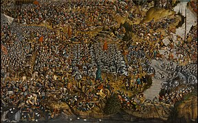
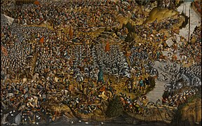

Історія України
Істо́рія Украї́ни — історія земель сучасної України, українського народу та інших її мешканців, що проживають на території України, від доісторичних часів до сьогодення. Територію України первісні люди почали заселяти з давніх-давен (перші сліди датуються близько 1 млн років до н. е.), після чого вже її не полишали навіть в часи найбільшого просування льодовиків на південь [⇨]. Територія країни належить до найперших вогнищ цивілізації та містобудування, вона входить до первісного ареалу приручення коня, винаходу колеса та освоєння перших металів людством [⇨]. Різні хвилі міграції індоєвропейців до Європи та пізніші в зворотному напрямку склали підґрунтя різнобарвної картини її населення.
Поділ території на великі природні лісову й степову смуги зумовив різні форми господарювання й заклав характер подальших історичних процесів, в яких степ український завжди залишався невід'ємною складовою загальноєвразійських історичних і етноміграційних процесів у Великому степу [⇨]. Грецька колонізація морського узбережжя увібрала територію України до орбіти античної цивілізації як її північний фронтир [⇨]. Велике переселення народів першої половини першого тисячоліття н. е. [⇨] підживило процеси державотворення у слов'янських племен [⇨], у яких на Східноєвропейській рівнині постала потужна середньовічна держава Київська Русь [⇨]. Подальші процеси феодального дроблення відкинули окремі її частини на різні орбіти європейського [⇨] та євразійського світів (Золота Орда) [⇨].
Західні землі Руси спочатку зібрало Велике князівство Литовське, яке, шукаючи союзників у боротьбі з Московським царством та балтійськими німцями тісно інтегрується із Польським королівством [⇨]. Утворюється потужна східноєвропейська держава ранньомодерного часу — Річ Посполита [⇨]. Соціально-політичні процеси в якому й нагальна потреба в захисті від кочовиків на півдні призводять до появи козацтва [⇨]. Яке саме невдовзі стане провідною силою в процесах його руйнації, становленню нової української нації, розбудові самостійної держави — Гетьманщини [⇨]. Українська нація, затиснута між трьох світів, мусульманського півдня, католицької твердині на заході й нового православного центру на сході, намагається торувати власний шлях, що на певному етапі більш тяжів до останнього [⇨].
Завдяки культурному просвітництву хвилі мігрантів з Подніпров'я, що знайшли місце застосування власним талантам на Москві, остання поступово частково європеїзувалася та трансформувалася у потужну євразійську силу — Російську імперію [⇨]. Ця сила за декілька століть поглинула майже усі українські етнічні землі, намагалася асимілювати їхнє населення у власному цивілізаційному морі [⇨].
Історичні назви українських територій
Перша засвідчена у писемних джерелах назва історичної території України — Руська земля. У X—XIII ст. цю назву вживали у двох значеннях: конкретному — на окреслення ядра політичної спільноти — Середнього Подніпров'я, і розширеному, що охоплювало усі території, які спершу підпорядковувались Києву, а згодом тяжіли до нього. Понад 400-літня традиція ототожнення себе з Руською землею не зникла і після розпаду цієї єдності. Тільки Галицько-Волинська держава, увійшовши до складу Корони Польської як особистий домен короля, офіційно іменувалася з першої третини XV ст. Руським воєводством[1].
Константинопольський патріархат задля розпізнання нового — московського і старого — київського святительських церковних осередків у першій половині XIV ст. вперше почав вживати поняття Micra Rosia (Мала Росія)‚ на відміну від Megale Rosia (Велика Росія). У церковно-адміністративному значенні поняття Мала Росія вживав Константинополь для позначення українських єпархій. З константинопольських грамот цей вислів в останній чверті XIV ст. перейшов до церковного письменства як урочистий синонім українського православного простору Польщі та Литовського князівства, а з кінця XVII — початку XVIII ст. став ототожнюватися з територією Козацької держави, аж врешті офіційно замінив її попередню назву (Україна)[2].
На західноєвропейських географічних мапах зе́млі колишніх північно-східних князівств послідовно позначалися як Moscovia. Натомість терени колишніх Чернігівського, Київського і Галицько-Волинського князівств, ототожнювані з первісною, материнською Руссю, завжди позначені як Russia чи Ruthenia (з XVI ст. — також Roxolania)[2].
Паралельно у внутрішньому вжитку з XVI ст., а особливо після укладення Люблінської унії 1569 р. нарівні зі словом Русь починають дедалі активніше вживати поняття Україна (саме ця назва зустрічається також у деяких іноземних документах — наприклад, у списках студентів Сорбонни). Характерно, що, як колись у княжі часи — Руська земля, слово Україна вживали у двох значеннях: конкретно-географічному — на означення Подніпров'я, і розширеному — як синонім усього українського простору[2].
Доісторичний період
Кам'яна доба
Палеоліт (1,5 млн — 11 тис. років тому). Перші люди на території сучасної України з'явилися в епоху раннього палеоліту, так звану ашельську добу, понад 900—800 тис. років тому[4]. Найдавніша стоянка первісної людини на території України, Королево-1 на Закарпатті, віком від 1 млн років (гюнцьке зледеніння)[5]. У верхніх шарах пізнього палеоліту сліди культури ашель і мустьє. Останнє палеолітичне поселення існувало тут на початку вюрмського зледеніння — близько 50 тис. років тому[5][6]. Заселення відбувалося із заходу на схід, кількаразовими хвилями, і тривало до 100 тис. років тому. Знаряддя праці цих людей, у яких археологи вбачають пітекантропів, виявлено окрім Закарпаття також на Наддністрянщині, Житомирщині, Донбасі та в Криму. Проте викопних решток пітекантропів не знайдено[4]. Антропогенез проходив в умовах періодичних зледенінь: гюнцького, міндельського, ріського (максимальне, льодовик доходив до умовної лінії Дніпро — Львів) і вюрмського, які формували природні зони України: тундру, лісостеп і степ[7].
У середньому палеоліті, у так звану мустьєрську добу, що тривала 100—35 тис. років тому, територію України займали неандертальці. Дослідники виявили понад 300 стоянок і поховань цих людей, переважно у гірських районах Закарпаття, Прикарпаття, Надпоріжжя, ряд стоянок в печерах східної частини Кримських гір — Киїк-Коба, Пролом I, Буран-Кая III, Вовчий Грот[8]. На стоянці Молодове на Дністрі була знайдена лопатка мамонта з малюнками на ній[9].
Мезоліт (11-8 тис. років тому). Період збігся з таненням льодовика та початком нової геологічної доби — голоцену. Загальне потепління сприяло збільшенню кількості населення. Апогей розвитку мисливського господарства. Зникнення льодовикової фауни внаслідок комплексу факторів (від кліматичних змін до прямого винищення людиною) призводить до остаточної кризи палеолітичних засобів мисливства. У цей період людина одомашнила собаку, винайшла лук і рибальське знаряддя. Замість колективного полювання на стадних тварин ця справа стає індивідуальною. Відбувається загальна індивідуалізація способу життя, побутове виокремлення родин від спільного роду. Одночасно відбувався поступовий перехід від кочового до осілого життя. Формувались перші територіальні громади. Середня очікувана тривалість життя збільшилась від 20-25 років до 35. У цей час на території сучасної України відбувається поширення мікролітів. В Україні виявлено понад 300 мезолітичних місцезнаходжень, які класифікують у південно-степову та полісько-лісостепову культурно-територіальні зони[12]. Криза привласнюваного мезолітичного господарства поступово змусила людей приступити до відтворювальних форм господарювання.
Неоліт (8-6 тис. років тому). Відбувається неолітична революція (термін запропоновано Гордоном Чайльдом) — перехід від привласнювального господарства (полювання, збиральництво) до відтворюючого (тваринництво, землеробство)[6]. Населення переходить до осілого способу життя, винаходить кераміку (що посіла важливе місце в поліпшенні засобів приготування й зберігання їжі), займається землеробством і скотарством (одомашнено більшість сучасних свійських тварин), що через нерівномірність географічних умов призводить до територіального поділу праці й розвитку торгівлі. З'являється ремісництво (особливо плетіння, на основі якого в деяких груп населення виникло ткацтво) і прошарок людей-організаторів з яких викристалізовується з часом аристократія. Стабілізувався ландшафтний поділ України на лісову, лісостепову і степову зони, утворився гумусний покрив землі. Неолітичні культури України формувалися під впливом досягнень осередків Близького Сходу, які імпортувалися переважно через Балканський півострів і Подунав'я[13]. До цього часу відноситься буго-дністровська культура.
Початок доби металів
Енеоліт, або мідна доба (7-5 тис. років тому). Ця епоха позначена впровадженням мідних знарядь праці. Стала виразнішою господарча спеціалізація природно-кліматичних зон: скотарство у степу, хліборобство в лісостепу і мисливство в лісовій смузі. Час великих землеробських культур на теренах України, перш за все трипільської (VI—III тисячоліття до н. е.) — культури величезних як на той час (10-15 тис. мешканців) концентричних протоміст з двоповерховими будівлями. Трипільці мали гончарні печі та власну знакову систему, тобто були близькі до створення власної цивілізації. Однак цьому завадив екстенсивний характер хліборобства, який розпорошив сили трипільців[14]. Трипільці відомі власною оригінальними розписами на кераміці, дрібними статуетками людей і тварин, керамічними моделями будівель, саней, тронів та сокир і біноклеподібними келихами. Цю археологічну культуру вперше відкрив Вікентій Хвойка, пізніше ретельно дослідили археологи Тетяна Пассек та Михайло Відейко. На сході України ці часи представлені середньостогівською культурою.


Бронзова доба (III тисячоліття — XII століття до н. е.). Період поширення виробів із бронзи (сплаву міді з оловом, або миш'яком). Аридизація клімату пожвавлює розвиток засобів виробництва, змушує степові племена розвивати кочове скотарство, а лісостепові — орне землеробство. Розширюється асортимент культурних рослин, зароджується садівництво. Продуктивність праці пожвавлює посилення майнової нерівності. Занепад трипільської культури позначився консолідацією скотарів і появою ямної культури (2800—2300 до н. е.), у носіях якої вчені вбачають аріїв, індоєвропейців[15]. Вони охоплювали територію від Криму до Київського Полісся. На базі цієї культури на південному сході Україні постає катакомбна культура (2300—1300 до н. е.), носії якої перебували у контактах з хліборобською культурою шнуркової кераміки (2300—1700 до н. е.), що займала територію північного заходу країни[16]. Після XVII століття до н. е. катакомбну культуру заступила зрубна культура (1700—1300 до н. е.), яка асоціюється з іраномовними племенами скотарів, а культуру шнуркової кераміки на теренах України витіснила тшинецька культура (1700—1200 до н. е.), яку пов'язують із праслов'янсько-балтською спільністю хліборобів[17].
Давня історія
Скіфо-сарматська доба
Кімерійці — перші відомі скотарські іранські племена на теренах сучасної України, що прийшли близько XV століття до н. е. з Передньої Азії через Кавказ і заселили степову й лісостепову зони. Вони перші принесли з собою залізне знаряддя (залізні мечі, оздоблені бронзою руків'я) й започаткували нову добу — залізну. Поховання робили як й інші іранці в курганах. У Гомера кіммерійці згадуються в «Одіссеї» під етнонімом «гіпемологи», тобто ті, що п'ють кобиляче молоко. Про «уславлених кобилодойців» повідомляє не тільки Гомер, але й такі відомі античні автори, як Геродот, Каллімах, Страбон. Ассирійські клинописні джерела згадують цей народ під назвою «гамірра». Кімерійці займали значну територію між Дністром і Доном, а також Кримський півострів, де вони мали укріплені городища. Саме кіммерійці збудували близько 1250 року до н. е. перше відоме місто-порт на території України. Їхнім головним заняттям були військові походи. Вважається, що кімерійці є гілкою давньоіранського кочового народу, генетично близького до скіфів. Їхня матеріальна культура дійшла до нас у вигляді прикрас із кісток, різноманітної зброї (луки, кинджали, мечі, молоти) з поховань зі стелами.
Скіфи, інші іранські племена з Центральної Азії, у VII столітті до н. е. витіснили кімерійців зі степу. Вони також були скотарями, кочовиками, полюбляли воювати. У Криму вони мирно асимілювалися з таврами, які жили тут з I тис. до н. е. й займалися скотарством, рільництвом та рибальством. Через тісні торговельні й культурні зв'язки з грецькими колоністами Північного Причорномор'я їхня культура, побут, міфологія та звичаї були добре описані («Скіфія» їхнього сучасника, давньогрецького історика Геродота) й дійшли до нас. У прикрасах характерною рисою тої доби є звіриний стиль (пектораль із Товстої Могили). У Північному Криму та нижній течії Дніпра відома велика кількість скіфських поховань-курганів (Товста могила, Солоха). Розрізняють скіфів-орачів на півночі (Чорноліська культура) та скіфів-скотарів на півдні. Серед південних скіфів вирізнялись, так звані «царські», які панували над іншими, збираючи з них данину. Царські скіфи поступово під впливом греків переходять до осілого способу життя (Неаполь Скіфський), утворюється перше державне об'єднання, відоме під назвою «царство Атея». 513 року до н. е. перський цар Дарій робить невдалий військовий похід до Скіфії з метою підкорити її народи, але отримує від непокірних скіфів замість «води й землі» лише «птаха, жабу, мишу і п'ять стріл».
У II—III століттях скіфи поступово зі сходу витискуються іншими кочовими скотарськими іранськими племенами — сарматами (савроматами). Ці народи добре відомі своєю войовничістю і міцною статурою. Вони, як і представники катакомбної культури до них та алани після, робили собі штучну деформацію черепів. Важка сарматська кіннота була затребувана римською армією в різних куточках імперії. Значну роль у житті сарматів відігравали жінки-амазонки. Археологічна культура сарматів значно бідніша за скіфську, для предметів ювелірного мистецтва (особливо фібул) сарматів також характерний звіриний стиль, але його відрізняє велика кількість коштовного каміння (бірюза та червоні самоцвіти).
Давньогрецькі колонії
У VIII столітті до н. е. в Греції відбувається демографічний вибух. Через брак родючих земель це спричинює масоване розселення і грецьку колонізацію Середземноморського світу (за словами давньоримського історика Плутарха, греки на берегах Середземного моря розсілися «немов ті жаби на берегах ставу»). Колонізація торкається й північних берегів Чорного моря. Ці процеси підсилюють незалежність окремих громад, дають альтернативу царській тиранії в полісах, отже пожвавлюють перехід до демократичних форм правління. VI століттям до н. е. датується вік появи першого грецького поселення на острові Березань в гирлі Дніпра (Борисфеніда). З часом на півдні сучасної України з'являються інші міста-держави: Тіра і Ніконій (на Дністрі), Ольвія (іонійська культура на Південному Бузі), Херсонес (дорійська культура біля сучасного Севастополя), Пантікапей (біля сучасної Керчі), Феодосія, Танаїс (в гирлі Дону). Економіка давньогрецьких полісів базувалась на високорозвиненому ремісництві, землеробстві (пшениця, виноград) та торгівлі з місцевими. До материнських полісів направляли хліб, вино, рибний соус гарун, виміняне хутро, мед, худобу. У полісах була розвинена рабовласницька демократія — уся влада належала громадянам («демосу»), що зі зброєю в руках боронили власну громаду й радились на агорах, шляхом голосуваннях вирішували важливі питання. Окрім громадян поліси населяли безправні раби, інші греки, що не були громадянами, займались здебільшого торгівлею («метеки») та іноземці «ксени». Головним джерелом постачання рабів був військовий полон, народження від рабині чи купівля на невільничих ринках. Колонії складалися власне з поліса та сільськогосподарських округів. Міста було оснащено водогоном та водостоком, були поширені ремесла й торгівля, карбувались власні монети. Нащадки давніх греків мешкали в Криму аж до кінця XVIII століття, коли за наказом Катерини II їх було насильно переселено у Приазов'я.

У V столітті до н. е. на берегах Керченської протоки, між Керченським та Таманським півостровами утворюється сильна централізована Боспорська держава. Спершу це був союз полісів (Феодосія, Фанагорія та ін., столицею був Пантікапей), які мали певну автономію, та згодом це об'єднання перетворилося на абсолютну монархію. Економіка цього царства була побудована на сільському господарстві та торгівлі з Афінами, куди вивозили до 5 млн пудів зерна щорічно. З часом Боспор тривало протистоїть експансії Риму на північний схід. Останній її правитель Мітрідат VI Євпатор у I столітті до н. е. зазнав остаточної поразки й вкоротив собі віку. Північне Причорномор'я потрапляє під вплив Римської імперії, хоча офіційні кордони держави проходили Дунаєм-Дністром (Траянові вали) і Кавказькими горами, а в Криму римські гарнізони перебували лише в окремих полісах.
Давньогрецька культура принесла до Північного Причорномор'я античну архітектуру, мистецтво, освіту, розвинену науку (особливо медицину), виноградарство та виноробство. Як наслідок грецької колонізації: розвиток демократичного устрою, технологій землеробства і ремесел, урбанізація, уведення в обіг монети, південний вектор цивілізаційної орієнтації населення.
Готські часи
Після розколу Римської імперії на Західну та Східну настав візантійський період в історії Північного Причорномор'я. У середині III ст. н. е. з басейну Вісли (вельбарська культура) на землі легендарного родючого Оюму переселяються скандинавські племена готів. Військова вправність та вождівська організація дозволила їм за часів Германариха підкорити величезні території в Східній Європі, місцеве землеробське населення лісової частини Подніпров'я (легендарна страта антського вождя Божа) та витіснити його на північ, вигнати іранські племена сарматів зі степу та завоювати Крим. Це призвело до заснування ними власного королівства (описаного в праці «Гетика» римського історика Йордана) зі столицею Данпарстад (ймовірно, городище біля села Башмачка, Дніпропетровської області). Деякі вчені вважають, що готи також були причетні до формування черняхівської археологічної культури (кінець II — середина V століття н. е.) — одного з найцікавіших явищ у дописемній історії на землях України[2]. Нині відомо близько 5 тис. черняхівських старожитностей, переважно поселень, а їх географія ототожнюється із значною частиною сучасної території України. Зокрема, зафіксовано, що саме в цей час на території України уперше стали використовувати гончарний круг та залізні лемеші, запровадили склоробне виробництво, всебічно розвинули металургію та різноманітні залізообробні ремесла[18]. Цю державу знищив 375 року н. е. союз кочових азійських племен гунів, яких очолював Баламбер. Невдовзі гуни створили між Доном і Карпатами могутню державу, на чолі якої став Аттіла (помер 453 року). Після кількох поразок від римлян і союзників вона втрачає силу і розпадається.

Ці процеси дали змогу нащадкам племен київської культури, що сформувалась на основі пізньозарубинецької та була витіснена готами на північ, знову вийти на світову арену й поновити розселення праслов'ян (колочинська, пеньківська культури) на південь в лісостеп і степ, перейти Карпати і Дунай і потрапити до Паннонії та Візантійської імперії. Скориставшись наслідками юстиніанової чуми VI століття слов'яни заселяють майже спустошені Балкани й стають головним етно-культурним рушієм цього регіону на наступні 1,5 тис. років.
Середні віки
Кочові держави
Після великого переселення народів в Північному Причорномор'ї почався довгий період нестабільності. Після держави кочовиків гунів був створений Аварський каганат. Після його розпаду східну частину України заселяли осілі племена аланів (Подоння) і кочові булгари, що мігрували Північним Причорномор'ям за Дунай до сучасної Болгарії. Торговельні шляхи степом (Великий шовковий шлях між Китаєм і Візантією) з VII століття контролював Хозарський каганат, археологічно представлений салтово-маяцькою культурою[19]. Через територію країни зі сходу до Паннонії (сучасна Угорщина) пізніше переселялись угри — легендарні Леведія (між Дніпром і Доном), Етелькуза (між Дніпром і Дністром), Угорське урочище в Києві. В часи Київської Русі в степовій зоні існували держави печенігів і половців (кипчаки).
Слов'яни у давнину
Прабатьківщина слов'ян не має загальновизнаної локалізації. Перші згадки про слов'ян трапляються у римських авторів I—II століття н. е. Плінія Старшого, Тацита, Птолемея, де слов'яни виступають як «венеди» або «венети». Етнонім «склавіни» вперше використовують візантійські автори. Йордан сповіщає, що в VI столітті вже були три гілки слов'ян: венеди (на північ і схід від Вісли й Карпат), анти (між Дністром і Дніпром) і склавіни (Нижнє Подунав'я). Більшість вчених вбачає у процесі розселення цих племен початок формування окремих слов'янських народів, зокрема українського. Пізніше слов'ян більш детально описав візантійський історик Прокопій Кесарійський у своїй трилогії «Історії війн» імператора Юстиніана (527—565). Це були часи, коли на спустошені юстиніановою чумою Балкани з півночі під тиском Великого переселення народів переселялись і слов'янські племена.
Між V—VII століттями на території склавинів та антів формуються локальні культурні ареали, які поступово кристалізувалися у союзи місцевих слов'янських племен. Племінні союзи слов'ян на теренах сучасної України: поляни (з центром в Києві), сіверяни (Чернігів), деревляни (Житомир), дуліби й бужани — у верхів'ях Дністра та басейні Західного Бугу, уличі (бузько-дністрове межиріччя), тиверці (дністрово-прутське межиріччя), білі хорвати або хорутани (Прикарпаття). На території Східноєвропейської рівнини також жили інші слов'янські племена: дреговичі, радимичі, в'ятичі, кривичі, ільменські словени (Новгород). Економічною основою східнослов'янських племен була родова власність на землю, коли знаряддя праці, продукти та майно поступово розділяють між родинами. Характерною рисою суспільного ладу була наявність сільської громади як об'єднання індивідуальних господарств. Слов'яни провадили осілий спосіб життя, що вимагало орне хліборобство — основа господарства. Вирощували пшеницю, жито, просо, ячмінь та ріпу. Зерно мололи на зернотертках, а потім — на жорнах. Поширене було й тваринництво, переважно розводили велику рогату худобу, свиней, овець, кіз. Менше значення мало рибальство, а полювання велось для здобуття цінного хутра. У релігійному світогляді формується культ природи на чолі з Перуном.

Вождівство було владним устроєм в слов'янських племенах. Вождь — виборна посада, заснована на особистих рисах і вчинках лідера. У IX столітті виборні вожді поступово замінюються аристократією та успадкуванням посад. У боротьбі з узурпацією влади племінною верхівкою та з міжусобицями всередині самої аристократії альтернативою виступають запрошені зі сторони військові лідери. У другій половині IX століття арабські джерела згадують про формування у Східній Європі (з проблематичною локалізацією) трьох політичних утворень народу русів: Куяби (Київ?, Повіслення?), Салавії (Ладога?) та Арсанії (Скандинавія?, Тмуторокань?).
Київська Русь
Утворення та становлення
Перша достеменна згадка про русів датується 839 роком у франкській хроніці «Бертинські аннали». З IX століття скандинавські мореплавці почали освоювати новий торговий шлях на південь, який дістав назву «шлях із варягів у греки». Він починався від озера Ільмень, а далі проходив де малими річками, де волоком і Дніпром до Чорного моря. Київ відігравав велику роль завдяки своєму положенню на місці злиття трьох найбільших артерій Русі — Дніпра, Прип'яті та Десни, це дозволяло контролювати увесь дніпровський шлях та сприяло торгівлі. Тому біля Києва починає формуватися певний союз племен. Інший сильний центр сформувався також у Новгороді — найбільшому торговому центрі на півночі Русі.
Візантійська імперія дізнається про нове потужне об'єднання після походу Аскольда та Діра на Константинополь 860 року. Візантійські пам'ятки виразно зафіксували навернення до християнства варяга Аскольда та його дружини. Вже 862 року жителі Новгородщини запросили нормана Рюрика до себе князем «земля наша рясна, але ладу в ній нема». По його смерті залишився його малолітній син Ігор, а влада перейшла до Олега — який став над ним регентом. Державні інституції займались восени збиранням данини (кружляння, полюддя), зовнішньою торгівлею (імпорт зброї, предметів розкоші, вина; експорт хутра, меду, шкір, воску, рабів), військовою підтримкою купців та війнами. Значне місце в цей час займає князівська дружина. 882 року Олег прийшов із дружиною до Києва, обманом вбив Аскольда, об'єднав північні та південні землі Русі та проголосив Київ столицею і «матір'ю міст руських». Олег значно зміцнив державу та провів кілька вдалих походів до Візантії 907 та 911 року, за результатами яких остання виплатила величезну контрибуцію та дала право безмитної торгівлі. Коли Ігор виріс, він обійняв княжий престол 912 року та продовжив політику зміцнення Русі, приєднавши уличів та тиверців. 941 і 944 року здійснив невдалі походи на Костянтинопіль, де його флот було розбито «грецьким вогнем», й підписав менш вигідну угоду, ніж Олег. Ігоря вбили деревляни під час збору данини (полюддя) 945 року.
Ольга, вдова Ігоря, жорстоко помстилася за смерть чоловіка. Вона провела податкову реформу, яка впорядкувала збір данини й запровадила погости (місця її збору); заснувала дипломатичні відносини з німецьким імператором, Папою Римським, Візантією та прийняла християнство. Київське князівство Ольга передала 964 року Святославу (сину Ігоря), який був войовничим язичником, провів майже все життя в походах — останній «справжній варяг» на княжому престолі. Він підкорив в'ятичів, ясів і касогів і розгромив Хозарський каганат, державне утворення хозарів на сході; вів успішні війни з болгарами та Візантією, навіть хотів перенести столицю власної держави до Переяславця. Але 971 року потрапив в облогу у фортеці Доростол, через що йому довелося повернути завойовані землі та повернутися до Києва. Дорогою, біля дніпровських порогів, його вбили печеніги, що були у змові з імператором. Розділ Святославом Русі між трьома своїми синами (Ярополком, Олегом та Володимиром) призвів до першої міжусобиці по його смерті, з якої переможцем вийшов Володимир.
Хрещення і розквіт
За роки правління Володимира Святославича (978—1015) Русь значно збільшується за рахунок завоювання та приєднання Червоної Русі, Закарпаття й Корсуня. Тобто Київська Русь стає найбільшою державою Європи з населенням понад 5 млн людей та територією 800 тис. км². Соціально-економічний устрій держави не відрізнявся від устрою інших тогочасних європейських держав. Основу його складало натуральне господарство, громадське володіння землею, підсічно-вогневе землеробство, скотарство. Володимир провів реформу місцевого самоврядування, ліквідувавши племінні автономії та ставлячи своїх намісників. 988 року Володимир оголосив про прийняття християнства Візантії, хрестив киян в Почайні, збудував перший кам'яний храм — Десятинну церкву, впровадив і «Статут про церковні суди і десятини». На відміну від спроб Ольги та Аскольда, це торкнулося широких верств населення, стало вирішальним кроком подальшої історії українських земель. Провів адміністративну, монетарну та військову реформи: посадив у великих містах намісників і синів, карбував власні златники та срібники, роздавав прикордонні землі вірним васалам в обмін на організацію оборони. Саме за вказівкою Володимира створено систему захисних споруд, відомих у народі як «Змієві вали», що простягалися на 1000 км.
Попри ці значущі зміни та зміцнення в устрої держави, після смерті Володимира Русь вступає у період міжусобної боротьби 1015-1019 років. Перемогу у протистоянні з братами здобув Ярослав Мудрий (1019–1054), який до 1036 року правив Руссю спільно з братом Мстиславом. Цей правитель остаточно розгромив печенігів, які здавна завдавали значної шкоди Київській Русі. й на тому місці збудував у Києві Собор святої Софії, що стоїть донині. Впродовж 1037–1039 років було створено перший літописний звід, побудовано перші книжкові майстерні. Було засновано Києво-Печерську лавру, обрано київського митрополита Іларіона. Проведено судову реформу — запроваджено першу на Русі збірку законів — «Руська правда». На півдні він приєднав землі Поросся, на заході — ряд земель Польського королівства. Ярослав Мудрий широко застосовував шлюбну дипломатію, активно одружував дочок з європейськими правителями.
Роздрібненість та ординська навала
Смерть Ярослава Мудрого 1054 року принесла новий період міжусобиці між його синами (Ізяслав, Святослав і Всеволод). Набула постійного характеру практика з'їздів через необхідність розробки законодавства, результатом яких став 1072 року документ — «Правда Ярославичів». 1097 року Володимир Мономах скликав з'їзд князів у Любечі, на якому було запроваджено новий вотчинний принцип спадкування княжого престолу — закріплено феодальну роздрібненість. На деякий час цей процес був призупинений Володимиром Мономахом, який після повстання 1113 року був запрошений киянами на престол. За його правління було побудовано перший міст через Дніпро. Він розробив додаток до «Руської Правди» — «Устав». Умілими військовими та дипломатичними діями контролював дві третини держави Ярослава, активно боронив місто від навал половців.
Після смерті Мстислава, старшого сина Володимира Мономаха, 1132 року Русь остаточно втратила свою єдність. До середини XII століття на території єдиної держави сформувалося близько 15 великих удільних князівств, кожне з яких жило по суті самостійним політичним життям, лише номінально визнаючи старшинство великого київського князя. На території сучасної України це були: Київське, Чернігівське, Переяславське, Волинське і Галицьке. У пізніших літописах саме цим періодом (1187 рік) уперше датується топонім «Україна». Починається активний процес боротьби за владу. За підрахунками Степана Томашівського, у Києві між 1146 та 1246 роками правителі мінялись 47 разів; повертаючись по кілька разів на престол, тут правили 24 князі, причому 35 княжінь тривало менше року кожне.
Усе це значно послабило могутню державу, що існувала за часів Ярослава Мудрого. Тому під час битви з новим для Русі ворогом татаро-монголами на річці Калці 1223 року руські князі, які не мали єдиного командування, зазнали катастрофічної поразки. Але смерть Чингісхана відклала на деякий час монгольське просування на захід. 1238 року війська хана Золотої Орди Бату-хана (Батия) спустошили північно-східну Русь. 1240 року вони вторглися на південь, захопили і вщент зруйнували Київ. Після Батиєвої навали руські князівства опинилися під важкою залежністю від Золотої Орди. Князі з повноправних володарів перетворилися на данників хана. Це стало поворотним моментом в історії українських земель, які, по суті, втратили незалежність.
Галицько-Волинське князівство
Галицьке князівство відокремилося від Києва 1097 року, найбільшої могутності сягнуло за часів Ярослава Осмомисла (1153-1187), галицького князя, що створив могутню державу, розбудовував міста, воював із половцями. За нього князівство доходило до Дунаю та Чорного моря, а також вело успішні війни з угорцями й поляками. Галицьке й Волинське князівства існували окремо, але 1199 року волинський князь Роман Мстиславич захопив Галич і створив єдине Галицько-Волинське князівство. 1203 року він захопив і Київ, який після спустошення 1169 року Андрієм Боголюбським не мав вже того значення. На той час князь Роман створив могутню державу, папа Іннокентій III пропонував йому стати королем Русі за перехід до католицтва, але той відмовився. По його смерті під час польського походу, впродовж 1205-1238 років у державі заправляла олігархічна боярська верхівка. 1238 року син Романа Данило Галицький, повернувшись із угорського вигнання, захоплює Галич та стає повновладним правителем князівства. Після походів монголів до центральної Європи, він у битві під Ярославом 1245 року остаточно перемагає боярську опозицію. Отримавши ярлик від монголів на правління, відновлює фортеці, зводить мури Кременця і Холма, переносить свою столицю до останнього. Укріпившись, 1252 року він розпочинає війну з монголами. Шукаючи допомоги, 1253 року в Дорогичині приймає королівську корону від папи Інокентія IV, який декларував хрестовий похід проти монголів, який так і не відбувся. Через що Данило не пустив до себе католицьких місіонерів й розірвав стосунки із папською курією. Данило Галицький брав участь у війні за австрійський престол, робив військові походи на Чехію і Польщу, Литву і землю ятвягів, але 1258 року скорився монгольській владі, поновив ярлик на князювання й зруйнував укріплення своїх міст.
Після смерті Данила 1264 року престол зайняв його син Лев Данилович (1264-1301). Він переніс столицю до новозбудованого Львова, воював з угорцями (приєднав Мукачево) і поляками (захопив Люблінську землю). По смерті Лева, престол зайняв його син Юрій I (1301-1308), який втратив Люблінську землю, переніс столицю до Володимира-Волинського, титулував себе «королем Русі, князем Володимирії», увійшов до союзу із Тевтонським орденом проти інших слов'янських князівств та заснував 1303 року православну Галицьку митрополію. 1325 року на престол було запрошено польського князя Болеслава Тройденовича, який відомий під іменем Юрій ІІ Болеслав, за його часів розпочалось активна полонізація українських земель. 1340 року, з отруєнням невдоволеними боярами Юрія ІІ, єдина Галицького-Волинська держава припинила своє існування.
Литовсько-руська доба
У XIV столітті підіймається Молдавське князівство, що розширює й закріплює північно-східні межі своїх володінь долиною Дністра, 1359 року Буковина стає його частиною як Шипинська земля. У цей саме час польська шляхта та литовські князі з роду Гедиміновичей вдало скористались початком занепаду Золотої Орди в процесі збирання і переділу західноруських земель. Починаючи з XIII століття, у боротьбі з німецьким Тевтонським орденом та галицько-волинськими князями формується литовська держава. До складу Великого князівства Литовського тривалий час входили білоруські й українські землі, та й пануванню на цих теренах Золотої Орди було покладено край значною мірою зусиллями Великого князівства. 1340 року польський король Казимир захопив Львів. Того ж року литовський князь Любарт Гедимінович (хрещений під іменем Дмитра) зайняв Волинь. Пізніше Київські, Чернігівські та Подільські землі приєднав до своїх володінь литовський князь Ольгерд, завдавши 1321 року на річці Ірпінь поразки руським князям, а 1362 року на Синіх Водах татарам. Литовські князі виступили заміною Рюриковичам у процесі об'єднання руських князівств. Вони діяли за принципом «нового не вводимо, старого не міняємо», активно переймали руську культуру: право («Руська правда»), мову, православ'я, активно укладали шлюби із руською знаттю.
1370 року помирає останній польський король з династії П'ястів — Казимир III Великий. Престол успадкувала його онука Ядвіґа, що призвело до довгих дебатів, в результаті яких було вирішено запросити великого князя литовського Яґайла Ольґердовича. 1385 року була укладена Кревська унія — шлюбний договір, за яким Ягайло прийняв католицтво і став польським королем. Через 2 роки Галицька земля була передана під польську корону. Владу ж у «Великому князівстві Литовському, Руському і Жемайтійському» перебрав його двоюрідний брат Вітовт, що відстоював незалежність князівства. Він проводив державницьку політику, централізував владу, замінив удільних князів на намісників, ліквідував Київське, Подільське, Новгород-Сіверське і Чернігівське князівства, розширив володіння правим берегом Дніпра до Чорного моря, де заклав систему укріплень (Каравул, Білгород, Хаджибей). У цей час, 1399 року золотоординський темник Єдигей, засновник Ногайської орди завдає йому нищівної поразки у битві над Ворсклою, а 1408 року встановлює кордон із Московським князівством по річці Угрі. 1410 року Вітовт очолив спільну польсько-литовсько-руську рать і розбив німецький Тевтонський орден у Ґрюнвальдській битві. 1413 року уклав Городельську унію з Ягайлом, що підтверджувала незалежність Великого князівства. 1415 року в Новгородку висвятив всупереч волі константинопольського патріарха київським і литовським митрополитом Григорія Цамблака. Натомість сили кочовиків на південно-східному фронтирі його держави залишались при силі, 1416 року Єдигей спалив Київ, але не спромігся захопити його замок.
 

По смерті Вітовта 1430 року княжий розгорнулась боротьба за великокняжий престол між Свидригайлом, якого підтримали православні й промосковські бояри з князями, та Сигізмундом, що дотримувався прозахідного вектора розвитку князівства, яка переросла в громадянську війну, в якій остаточно перемогла партія Сигізмунда. Під час цієї смути протягом 3 років проіснувало Велике князівство Руське. Західні українські землі увійшли до складу Польщі як Руське і Подільське воєводства, боярам надали ті самі права, що були у польської шляхти, містам місцеве самоврядування — магдебурзьке право. 1452 року були остаточно ліквідовано Волинське князівство, а 1471 року — Київське. 1481 року князі-«самостійники» спробували утворити змову, але її було придушено у зародку. Останнім виступом руських князів, нащадків Рюрика, було повстання князів Глинських 1508 року. Воно було придушено, князі з частиною земель (Стародубщина, Чернігівщина, Новгород-Сіверщина) внаслідок московсько-литовської війни перейшли до Московщини. З початку XVI століття триває московсько-литовський конфлікт за руські князівства. 1514 року війська Костянтина Острозького у битві під Оршею розбили армію Василія III і зупинили на деякий час загарбання Москвою руських земель.
Причорномор'я. Створення Кримського ханства
Золота орда за своєю суттю була кочовою державою і тому дуже нестабільною. Морська торгівля з країнами Середземномор'я здійснювалась за допомогою колоній і флоту Генуезької республіки (Джинестра, Чембало, Кафа, Солдая, Тана та ін.), що з'явились на півночі Чорного моря після падіння Костянтинополя через хрестові походи — Газарія. У цей час греко-готське православне населення колишніх візантійських земель зорганізовується в царство Феодоро (або Готія) з центром на плато Мангуп в Криму. 1449 року за підтримки Литви та генуезців від влади Орди звільнилось Кримське ханство на чолі з Хаджі I Ґераєм. До її складу увійшли кипчаки, хозари, ногаї та інші народи. Територія ханства охоплювала південні межі сучасної території України (в Криму північну степову частину) та Кубань. Столиця була в Солхаті. Проте вже 1478 року ханство потрапило під вплив від іншої сили — Османської імперії тюрків-османів. Османи швидко прибирають в свої руки всю морську торгівлю через Чорноморські протоки, генуезці покидають свої колонії, а кримські татари, позбавлені значних прибутків, потрапляють в скрутне становище.